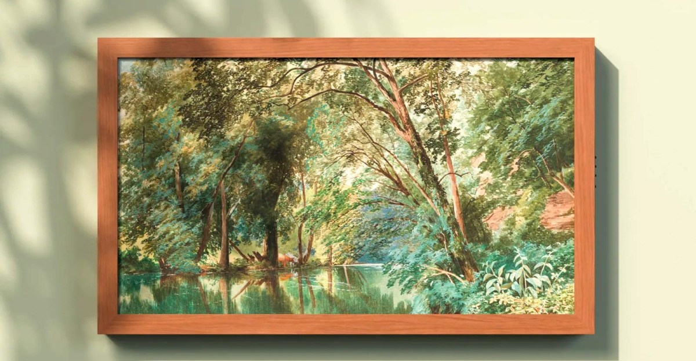

for DC Advanced UX Team.Vivi · Yohan · Libby · Lim Jisu · Katey · Anna
Back Issue

Interaction
Trmnl: a poster that runs the day
Trmnl's Frame is a 31.5-inch E Ink Spectra 6 panel in white oak, cherry, sapele or walnut. It hangs as a picture or as a wall dashboard: weather and to-do lists share the glass with photos, through more than 1,400 plugins. Lazarus matches colour for Spectra 6, and the frame is open source, so the tuning can change. A 10,000mAh pack is meant to last months. Offline, images on a microSD cycle on a schedule. The first wooden run is about 470, at $1,299, most due in early 2027.
트름늘의 프레임은 31.5인치 이잉크 스펙트라 6이고, 틀은 화이트 오크, 체리, 사펠레, 월넛이다. 그림으로 걸 수도 있고, 날씨와 할 일, 사진을 한 유리에 올리는 대시보드로 걸 수도 있다. 플러그인은 1400개가 넘는다. 색 맞춤은 라자루스이고, 오픈 소스라 튜닝을 바꿀 수 있다. 10000mAh는 몇 달을 버티게 잡혀 있다. 오프라인에서는 microSD 이미지를 일정대로 돌린다. 첫 런은 약 470대, 1299달러다.
A swarm hangs over a skyline, and the grid is the hive. Colors And The Kids in Berlin made Quorum themselves, picture and score, about a minute and a half. Bees roll a ball, drift and bump. Flight paths tighten into lines, the lines read as data, then the data turns back into bodies. One bee leaves the pattern. Scouts wander, come back and dance until the swarm agrees, and pollen covers the blocks. The sets change material: lifelike insects, toy-gloss bees, nests as coiled sculpture, each lit like a product shot.
蜂群悬在天际线上方，城市网格就是蜂巢。柏林Colors And The Kids自己做了Quorum，画面和配乐都在室内，大约一分半。蜜蜂滚球、漂开、相撞。飞行轨迹收成线，线读成数据，数据再变回身体。一只蜜蜂离开图案。侦察蜂游走、返回、舞蹈，直到蜂群达成一致，花粉盖住积木。场景换材料：写实的虫、玩具光泽的蜂、盘成雕塑的巢，每一场都像产品摄影那样打光。
벌 떼가 스카이라인 위에 떠 있고, 도시의 격자가 벌집이다. 베를린의 컬러스 앤 더 키즈가 쿼럼의 그림과 음악을 직접 만들었다. 길이는 약 1분 30초다. 벌은 공을 굴리고, 길을 벗어나고, 부딪힌다. 비행 경로는 선이 되고, 선은 데이터로 읽히다 다시 몸이 된다. 벌 한 마리가 패턴을 떠난다. 정찰벌이 돌아와 춤을 추면 떼가 뜻을 모으고, 꽃가루가 블록을 덮는다. 조명은 제품 촬영에 가깝다.
North Design nested three forms from Norman Foster's 1970s steel-frame sketch into the Sainsbury Centre mark. The 1978 building at the University of East Anglia returns to the name in its founding deeds, the Sainsbury Museum and Art Centre. SM Baumer Mono is uniwidth. Functional mode keeps the spacing even for wayfinding. Expressive mode lets the gaps go uneven on posters and screens. Colour is aluminium, steel, glass and concrete. The grid is the part taken from Otl Aicher.
North Design把Norman Foster 1970年代钢框架草图里的三个形体嵌成Sainsbury Centre的标志。东英吉利大学这栋1978年的建筑，改回创立文书里的名字。字体SM Baumer Mono是等宽。功能模式字距均匀，用于导视；表现模式让间距不齐，用在海报和屏幕上。颜色来自铝、钢、玻璃和混凝土。网格借自Otl Aicher。
노스 디자인은 노먼 포스터의 1970년대 철골 스케치에서 세 틀을 꺼내 마크로 겹쳤다. 1978년 건물은 설립 문서의 이름, 세인즈버리 뮤지엄 앤드 아트 센터로 돌아간다. 전용 서체 SM 바우머 모노는 유니위스다. 기능 모드는 간격을 고르게 잡아 웨이파인딩에 쓰고, 표현 모드는 포스터와 화면에서 간격을 흔든다. 색은 알루미늄, 강, 유리, 콘크리트에서 온다. 그리드는 오틀 아이허에게서 빌렸다.
1Password opens coded templates inside Figma Make. Ryan Williamson-Cardneau fed updated screens into one and had Make swap hardcoded padding for design-system variables: about 30 edits, roughly 80% right. Code Connect maps the components to the published library, so a primary button becomes a secondary one from a dropdown. Matt Davey duplicates a prototype on the canvas and compares the branches. The chat sits on their MCP. The screen they redraw is where a person approves an agent's request for a credential.
1패스워드는 피그마 파일로 만든 코드 템플릿을 피그마 메이크에서 연다. 라이언 윌리엄슨카르도노는 갱신된 화면을 넣고, 하드코딩된 패딩을 디자인 시스템 변수로 바꾸게 했다. 약 30곳 중 80%가 맞게 돌아왔다. 코드 커넥트 때문에 버튼 종류는 드롭다운으로 고른다. 맷 데이비는 캔버스에서 프로토타입을 복제해 갈래를 나란히 본다. 채팅은 그들의 MCP에 붙어 있다. 반복해서 그리는 화면은, 사람이 에이전트의 자격 증명 요청을 승인하는 장면이다.
On PS5 the pause menu is no longer a desktop window with tabs. BeamNG rebuilt it around four jobs: System, the mode, the vehicle, and the environment. Familiar controls stay where a PC player expects them, and every keyboard shortcut now appears as a button prompt during play. The soft-body skeleton matches the PC build: masses and springs, and the mesh deforms with them. The first minutes are just driving. The rest of the interface shows up when it is relevant.
PS5의 일시정지 메뉴는 탭이 달린 데스크톱 창이 아니다. 빔NG는 이것을 시스템, 현재 모드, 차량, 환경의 네 가지로 다시 짰다. 익숙한 자리는 남고, 키보드 단축키는 주행 중 버튼 프롬프트가 된다. 소프트바디 골격은 PC와 같다. 질량과 스프링이고, 메시는 따라 변형된다. 처음 몇 분은 운전뿐이다. 나머지 인터페이스는 필요할 때 나타난다.
A door-open shot in a Korean garage shows an IONIQ 5 test car with one large centre display where the current car has two 12.3-inch screens. The glass looks like Pleos Connect, Hyundai Motor Group's Android Automotive stack: a map, apps, a split view. Earlier frames of the same mule show no driver display, so speed would live on that centre screen, or on a HUD missing from the photo. The wheel and the dash are new. Grandeur already runs Pleos in Korea. The US Tucson is set for early 2027.
문이 열린 IONIQ 5 시험차가 한국 주차장에서 찍혔다. 12.3인치 두 장이 있던 자리에 중앙의 큰 화면이 있다. 유리는 플레오스 커넥트처럼 보인다. 안드로이드 오토모티브 위에 지도, 앱, 분할 화면이 있다. 앞선 사진에는 운전자 디스플레이가 없어서, 속도는 중앙 화면이나 사진에 없는 HUD로 간다. 스티어링과 대시는 새것이다. 그랜저는 한국에서 이미 쓴다. 미국 투싼은 2027년 초다.
Amflow, the DJI spinoff, set a 1.4-inch touchscreen into the bars of the UE Carbon, beside a 15W wireless phone pad and a 20W USB-C port. An Apple Watch in range unlocks the bike, Find My tracks it, and a paired heart-rate strap can hold the rider in a zone by changing the assist. Osmo recording controls sit in the same cluster. The motor behind that face is the Avinox unit: 125Nm, 1,100W peak, under 45dBA, on a 20.9kg step-through with a swappable 600Wh pack. UE Carbon starts at €3,099. The Pro is €3,499.
DJI에서 갈라진 암플로는 UE 카본 핸들바에 1.4인치 터치스크린을 넣었다. 옆에는 15W 무선 충전과 20W USB-C가 있다. 애플 워치가 잠금을 풀고, 나의 찾기가 위치를 따른다. 심박 벨트는 어시스트를 바꿔 목표 구간을 유지한다. 오스모 녹화도 같은 곳에 있다. 모터는 아비녹스, 125Nm, 피크 1100W다. 20.9kg, 교체형 600Wh, 3099유로부터다.
The Material 3 Expressive pass for Android Auto, shown at I/O in May, is still not on the road. In the 18.0 teardown the Cielo codename is already there, with dashboard motion and map scaling, and a later pass added more than 100 assets for a light theme. The intended face is rounder type, new colour and smoother motion, and Maps is meant to fill screens that are not rectangles. The bet in the piece is early next year, not this December. Head units still serve displays going back to 2015.
五月I/O上的Android Auto Material 3 Expressive，路上还没有。18.0拆包里已有代号Cielo、仪表动画和地图缩放，后来又多了100多个浅色素材。打算中的样子是更圆的字、新颜色、更顺的动效，地图要铺满非矩形屏幕。时间押在明年年初，不是十二月。车机仍得伺候2015年起的屏幕。
5월 I/O의 안드로이드 오토 머티리얼 3 익스프레시브는 아직 차 안에 없다. 18.0 분해에는 코드명 시엘로, 대시보드 모션, 지도 스케일이 있고, 이후 라이트 테마 에셋이 100개 넘게 늘었다. 노리는 얼굴은 더 둥근 글자, 새 색, 더 매끈한 모션이고, 지도는 직사각형이 아닌 화면도 채운다. 예상은 내년 초다. 헤드는 2015년부터의 디스플레이를 아직 받친다.
Love in Manchester laid real plants on cyanotype paper and let the sun make the silhouettes for Everleaf's three aperitifs. Forest is saffron and orchid, Mountain is rosehip and cherry blossom, Marine is seaweed and olive. The bottle is 385g instead of 500g, in post-consumer glass, with embossed acacia at the base, a texture at the neck and a leaf in the shoulder. Caps are blue, orange and pink. Cartons are white, with a halftone of the same print. Shipping boxes are kraft, one dark ink, foliage off the edge.
맨체스터의 러브는 진짜 식물을 사이아노타입 종이 위에 올려 햇빛으로 에버리프 세 아페리티프의 실루엣을 만들었다. 포레스트는 사프란과 난, 마운틴은 로즈힙과 벚꽃, 마린은 해조와 올리브다. 병은 500g에서 385g, 유리는 소비 후 재활용이다. 바닥에 아카시아 양각, 목에 질감, 어깨에 잎이 있다. 캡은 파랑, 주황, 분홍. 상자는 흰색 망점이고, 배송 상자는 크래프트에 잉크 한 색이다.
FutureBrand's new mark is an angled F, not one drawing. It takes on different materials, and the wordmark slants with it in Future Display. Boxes cut from the F shift perspective and still work as interface pieces. The site stays black and white so client work has a place to sit. Cursor and buttons are part of the behaviour, not a skin. Sound comes from the phonetics of the name, the same word at different pitches. It still has to read when the identity is no longer fixed.
퓨처브랜드의 새 마크는 기울어진 F이고, 그림 한 장이 아니다. 재료와 질감을 바꿔 입고, 워드마크도 같이 기운다. 서체는 그들의 퓨처 디스플레이다. F에서 잘라 낸 상자는 시점을 바꾸면서도 인터페이스 조각으로 남는다. 사이트는 흑백이라 클라이언트 작업이 앉을 자리가 있고, 커서와 버튼은 스킨이 아니라 행동의 일부다. 사운드는 이름의 음성에서 오고, 같은 단어를 다른 음높이로 낸다. 시스템의 요점은 고정된 아이덴티티가 아니어도 여전히 읽힌다는 것이다.
Nike's Tuned Air sole is printed, not one even bladder. Ink goes only where the layers should bond, so the pockets inside can be any shape, and the air in each can sit firmer or softer than its neighbour. The reference they give is colour on a magazine cover, not a new silhouette. The first running shoes are aimed at late 2027. It follows the Air Max 1000 of 2024, which varied support inside one form by 3D printing. Here the variable thing is the air itself.
耐克的Tuned Air鞋底是印出来的，不是一整只均匀的气囊。数码印刷加选择性层压，只在该粘合的地方上墨，所以内部气室可以是任意形状，相邻气室里的气可以一边硬、一边软。他们给出的参照是杂志封面的颜色，不是一个新轮廓。第一双用上它的跑鞋指向2027年末。这跟在2024年的Air Max 1000后面：那双用3D打印在同一个形体里改变支撑。这一次会变的是空气本身。
나이키의 튠드 에어 솔은 인쇄로 만들고, 균일한 에어백 하나가 아니다. 잉크는 층이 붙는 곳에만 놓여, 주머니의 모양과 공기 압을 이웃과 다르게 할 수 있다. 참조는 잡지 표지의 색이다. 첫 러닝화는 2027년 말이다. 2024년 에어 맥스 1000이 3D 프린트로 지지력을 바꾼 다음이고, 이번에는 공기 자체가 변한다.
GPT-6.2 Astra, posted on 17 November, is the model OpenAI points at slides, spreadsheets and documents that stay on a template instead of a generic layout. The same note calls it stronger at websites, games and 3D. The Verge's comparison frame is a garden plan, and Astra's is far more detailed than GPT-6. GPT-6.2 Sol ships in the same pass as the more efficient of the two. The frame to keep is the garden, where the paths and the planting hold a grid.
11월 17일에 나온 GPT-6.2 아스트라는 슬라이드, 스프레드시트, 문서를 템플릿 위에 머물게 하는 모델이다. 흔한 레이아웃으로 흘러가지 않게 하는 쪽이다. 같은 설명은 웹사이트, 게임, 3D에서도 더 낫다고 한다. 더 버지의 비교 프레임은 정원 평면도이고, 아스트라의 결과는 GPT-6보다 훨씬 자세하다. 그 아래의 GPT-6.2 솔도 같은 번에 나오며, 둘 중 더 효율적인 쪽으로 적혀 있다. 남겨 둘 프레임은 정원이다. 길과 식재가 실제로 그리드를 지킨다.
Vishesh Singh and Kunal Sharma's REC DIAL is a short cylinder. A disc turns through playback, volume and the list of recordings, and the circular display in the middle is what you press to confirm. Four buttons use triangle, square, circle and cross, with no jobs assigned. Black-tinted glass shows the parts. Perforations run the side. A magnetic pad is drawn for a fridge or a shirt. The parts list names a microSD slot, a headphone jack and a 1,200mAh cell.
비셰시 싱과 쿠날 샤르마의 REC 다이얼은 짧은 원통이다. 원반은 재생, 음량, 녹음 목록을 돌리고, 가운데 둥근 화면을 눌러 확정한다. 버튼 네 개는 삼각, 사각, 원, 가위표인데 역할은 없다. 검은 유리가 부품을 보여 주고, 옆면에는 구멍이 있다. 자석 패드는 냉장고나 옷에 붙는다. 안에는 microSD, 헤드폰 잭, 1200mAh가 있다.
Ines Launay draws separate pencil pieces, then decides how they share a page. One sheet is a Japanese shopfront, bicycles and signs packed into the street. Others mix notes, tiny figures and a speech bubble, closer to a diary than a poster. Levain, her 2024 graduation book, follows three friends trying different ways of living. Sur les pas d'Ella Maillart, made with Louane Carmona and Coline Balfroid, is pencil and handwriting, with a video beside it. The drawings fit around a job and the trails she runs.
이네스 로네는 연필 조각을 따로 그린 뒤에야 한 페이지에 어떻게 놓을지 정한다. 한 장은 일본 상점 앞, 자전거와 간판이 빼곡하다. 다른 장은 메모, 작은 인물, 말풍선을 섞어 일기처럼 보인다. 2024년 졸업작 르뱅은 사는 법을 시험하는 세 친구를 따라간다. 엘라 마야르 여행 노트는 루안 카르모나, 콜린 발프루아와 함께 연필과 손글씨로 만들었고, 옆에 영상이 있다.
Oskar is an axolotl in a hospital aquarium, and he waits for one child to come back. Duncan Christie directed Die stille Freundschaft for Swiss Brands United, and Shining Film produced it. Postoffice Amsterdam built the creature: CGI where the performance has to stay consistent, AI where they needed to try faces faster. Small changes in timing are the whole character. Luca Hänni sings Somebody. STASH set this next to last week's Netflix axolotl. This one stays in the tank.
오스카르는 병원 수족관의 아홀로틀이고, 아이 하나가 돌아오기를 기다린다. 덩컨 크리스티가 연출하고 샤이닝 필름이 제작했다. 포스트오피스는 연기가 일정해야 하는 곳에 CGI를, 표정을 빨리 시험하는 곳에 AI를 썼다. 타이밍의 작은 변화가 캐릭터의 전부다. 루카 헤니가 Somebody를 부른다. 이 오스카르는 수조에 남는다.
AutoHome photos of the new BYD Han put an LCD cluster behind a three-spoke, D-shaped wheel and a floating touchscreen on the tunnel. Under that glass is a block of physical buttons, two charge pads, a lidded bin and an armrest. The shifter is a stalk. Door cards keep physical handles. The cabin is beige, perforated leather, a chrome strip. The layout follows the larger Da Han. The change is not another inch of screen. The buttons are back under the glass, in reach.
오토홈 사진 속 새 BYD 한은 D형 스티어링 뒤에 LCD 클러스터를, 터널 위에 플로팅 스크린을 둔다. 유리 아래에는 물리 버튼, 충전 패드 두 개, 수납, 암레스트가 있다. 변속은 스토크, 도어는 물리 손잡이다. 캐빈은 베이지와 타공 가죽이다. 레이아웃은 더 큰 다한을 따른다. 바뀐 것은 화면 크기가 아니라, 버튼이 유리 아래로 돌아온 것이다.